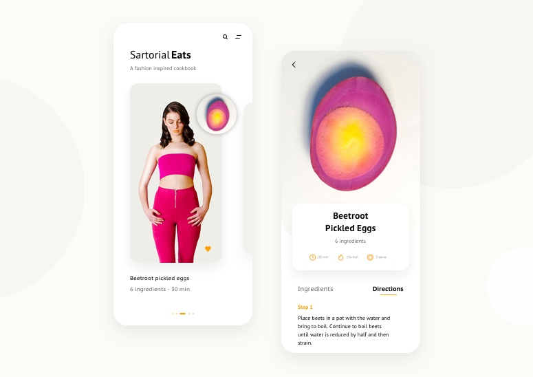
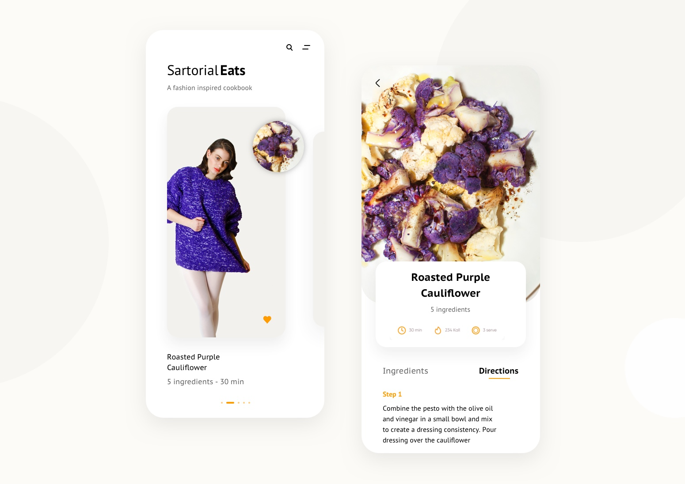
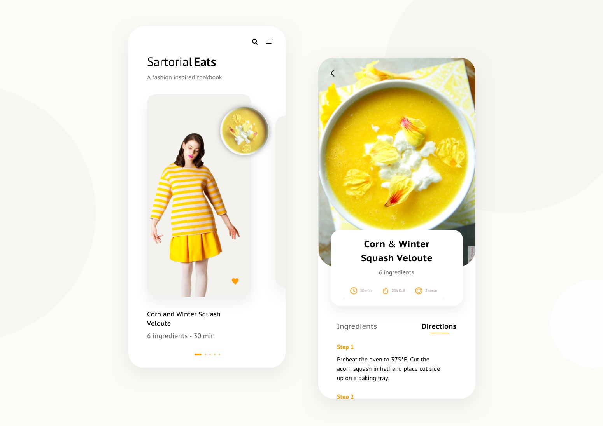

Digital Recipe Book
Food-fashion editorial concept

Overview
As part of my Design program at Ryerson University, I created Sartorial Eats: a publication for the foodie-fashionista. Together with Head Chef @chef_fenlon, we crafted a series of simple recipes paired with styled looks to create a sartorially scrumptious experience.


